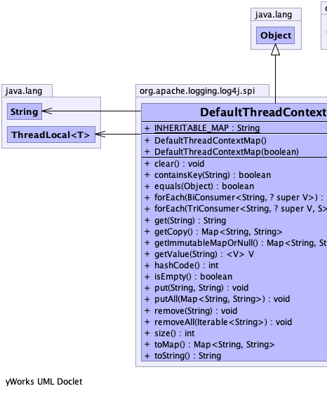
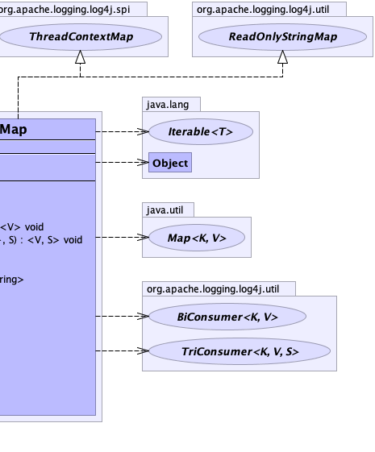

public class DefaultThreadContextMap extends java.lang.Object implements ThreadContextMap, ReadOnlyStringMap
|  |  |
| Modifier and Type | Field and Description |
|---|---|
static java.lang.String |
INHERITABLE_MAP
Property name ("isThreadContextMapInheritable" ) for selecting
InheritableThreadLocal (value "true") or plain
ThreadLocal (value is not "true") in the implementation. |
| Constructor and Description |
|---|
DefaultThreadContextMap() |
DefaultThreadContextMap(boolean useMap) |
| Modifier and Type | Method and Description |
|---|---|
void |
clear()
Clears the context.
|
boolean |
containsKey(java.lang.String key)
Determines if the key is in the context.
|
boolean |
equals(java.lang.Object obj) |
<V> void |
forEach(BiConsumer<java.lang.String,? super V> action)
Performs the given action for each key-value pair in this data structure
until all entries have been processed or the action throws an exception.
|
<V,S> void |
forEach(TriConsumer<java.lang.String,? super V,S> action,
S state)
Performs the given action for each key-value pair in this data structure
until all entries have been processed or the action throws an exception.
|
java.lang.String |
get(java.lang.String key)
Gets the context identified by the
key parameter. |
java.util.Map<java.lang.String,java.lang.String> |
getCopy()
Gets a non-
null mutable copy of current thread's context Map. |
java.util.Map<java.lang.String,java.lang.String> |
getImmutableMapOrNull()
Returns an immutable view on the context Map or
null if the context map is empty. |
<V> V |
getValue(java.lang.String key)
Returns the value for the specified key, or
null if the specified key does not exist in this collection. |
int |
hashCode() |
boolean |
isEmpty()
Returns true if the Map is empty.
|
void |
put(java.lang.String key,
java.lang.String value)
Puts a context value (the
o parameter) as identified
with the key parameter into the current thread's
context map. |
void |
putAll(java.util.Map<java.lang.String,java.lang.String> m) |
void |
remove(java.lang.String key)
Removes the the context identified by the
key
parameter. |
void |
removeAll(java.lang.Iterable<java.lang.String> keys) |
int |
size()
Returns the number of key-value pairs in this collection.
|
java.util.Map<java.lang.String,java.lang.String> |
toMap()
Returns a non-
null mutable Map<String, String> containing a snapshot of this data structure. |
java.lang.String |
toString() |
public static final java.lang.String INHERITABLE_MAP
InheritableThreadLocal (value "true") or plain
ThreadLocal (value is not "true") in the implementation.public DefaultThreadContextMap()
public DefaultThreadContextMap(boolean useMap)
public void put(java.lang.String key,
java.lang.String value)
ThreadContextMapo parameter) as identified
with the key parameter into the current thread's
context map.
If the current thread does not have a context map it is created as a side effect.
put in interface ThreadContextMapkey - The key name.value - The key value.public void putAll(java.util.Map<java.lang.String,java.lang.String> m)
public java.lang.String get(java.lang.String key)
ThreadContextMapkey parameter.
This method has no side effects.
get in interface ThreadContextMapkey - The key to locate.public void remove(java.lang.String key)
ThreadContextMapkey
parameter.remove in interface ThreadContextMapkey - The key to remove.public void removeAll(java.lang.Iterable<java.lang.String> keys)
public void clear()
ThreadContextMapclear in interface ThreadContextMappublic java.util.Map<java.lang.String,java.lang.String> toMap()
ReadOnlyStringMapnull mutable Map<String, String> containing a snapshot of this data structure.toMap in interface ReadOnlyStringMapMap<String, String> form.public boolean containsKey(java.lang.String key)
ThreadContextMapcontainsKey in interface ThreadContextMapcontainsKey in interface ReadOnlyStringMapkey - The key to locate.public <V> void forEach(BiConsumer<java.lang.String,? super V> action)
ReadOnlyStringMap
Some implementations may not support structural modifications (adding new elements or removing elements) while
iterating over the contents. In such implementations, attempts to add or remove elements from the
BiConsumer's BiConsumer.accept(Object, Object) accept} method may cause a
ConcurrentModificationException to be thrown.
forEach in interface ReadOnlyStringMapV - type of the value.action - The action to be performed for each key-value pair in this collection.public <V,S> void forEach(TriConsumer<java.lang.String,? super V,S> action, S state)
ReadOnlyStringMapThe third parameter lets callers pass in a stateful object to be modified with the key-value pairs, so the TriConsumer implementation itself can be stateless and potentially reusable.
Some implementations may not support structural modifications (adding new elements or removing elements) while
iterating over the contents. In such implementations, attempts to add or remove elements from the
TriConsumer's accept method may cause a
ConcurrentModificationException to be thrown.
forEach in interface ReadOnlyStringMapV - type of the value.S - type of the third parameter.action - The action to be performed for each key-value pair in this collection.state - the object to be passed as the third parameter to each invocation on the specified
triconsumer.public <V> V getValue(java.lang.String key)
ReadOnlyStringMapnull if the specified key does not exist in this collection.getValue in interface ReadOnlyStringMapkey - the key whose value to return.null.public java.util.Map<java.lang.String,java.lang.String> getCopy()
ThreadContextMapnull mutable copy of current thread's context Map.getCopy in interface ThreadContextMappublic java.util.Map<java.lang.String,java.lang.String> getImmutableMapOrNull()
ThreadContextMapnull if the context map is empty.getImmutableMapOrNull in interface ThreadContextMapnull.public boolean isEmpty()
ThreadContextMapisEmpty in interface ThreadContextMapisEmpty in interface ReadOnlyStringMappublic int size()
ReadOnlyStringMapsize in interface ReadOnlyStringMappublic java.lang.String toString()
toString in class java.lang.Objectpublic int hashCode()
hashCode in class java.lang.Objectpublic boolean equals(java.lang.Object obj)
equals in class java.lang.Object